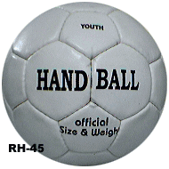

Историја на ракометот |
.png) .png) .png) .png) .png) .png) |
Ракометот во неговиот денешен изглед го измислија данските фудбалери на преминот од ХIХ и ХХ век како замена за фудбалот во зимскиот период. За разлика од фудбалот новата игра се играла исклучиво со раце, а секоја екипа се состоела од 6 играчи и голман. Како дата на раѓање на спортската игра со топка, регистрирана во меѓународната спортска класификација како Handball (топка со рака) се смета 1898 година кога во данскиот град Ордруп наставникот по физичка култура во локалното реално училиште Холгер Нилсен држи часови на кои групи ученички (по 7) подаваат топка со рака и се обидуваат да постигнат гол. Својата игра тој ја нарече “хаандболд“. Нешто порано во 1890 година во Чешка стана популарна народната игра “Хазена“ со многу елементи на ракометот. Во 1917 година берлинецот Макс Хејзер ги спојува двете варијанти и ја создава новата игра “Handball“. Никој не претпоставувал дека новата игра измислена како женска забава ќе стекне огромна популарност во целиот свет. Во 1920 година во Берлин беа организирани првото првенство и првиот куп на Германија, а во 1923 година беа воведени нови правила: намален обимот на топката и правилата за “3 секунди“ и “3 корака“. Во 1925 година одигран е првиот интернационален натпревар во кој Австрија ја совлада Германија со резултат 6:5. Во 1926 година ракометот е признат како меѓународен спорт, што беше импулс за негово масовно ширење во Луксембург, Швајцарија, Шпанија и други земји. Во 1928 година во Амстердам беше формирана Меѓународната аматерска ракометна федерација (IAHF), во која членуваа 11 национални федерации и која профункционира до 1944 година. Во 1936 година ракометот е вклучен во олимписката програма и на игрите во Берлин го добиваме првиот Олимписки шампион, тимот на Германија. Во исто време на 4-ти конгрес на IAHF во Берлин одлучено е да се организираат светски првенства, во формат 7х7 и 11х11 (според бројот на играчи) посебно. За почеток беа предвидени натпревари само во машка конкуренција. Првото Светско првенство организирано од IAHF се одржа во Германија во 1938 година, а титулата ја освои екипата на домаќинот Германија. Во формат 7х7, првото Светско првенство за мажи е организирано во 1954 година, во Шведска. Победи екипата на домаќинот Шведска. Првото женско Светско првенство во овој формат се одржа во Југославија во 1957 година, а титулата ја освои селекцијата на Чехословачка. |